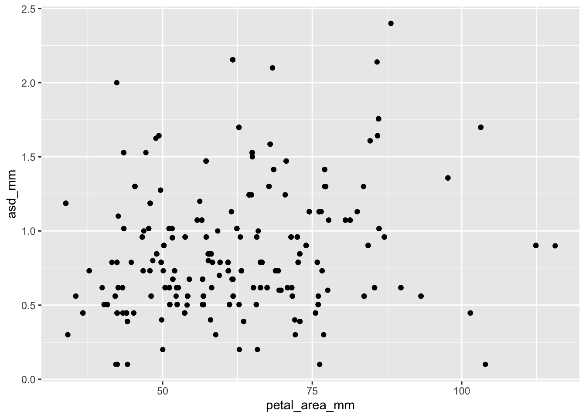
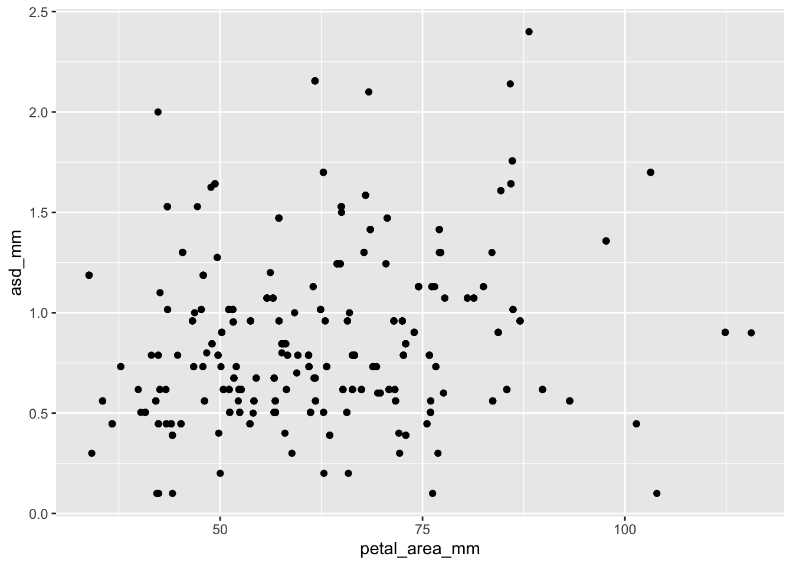
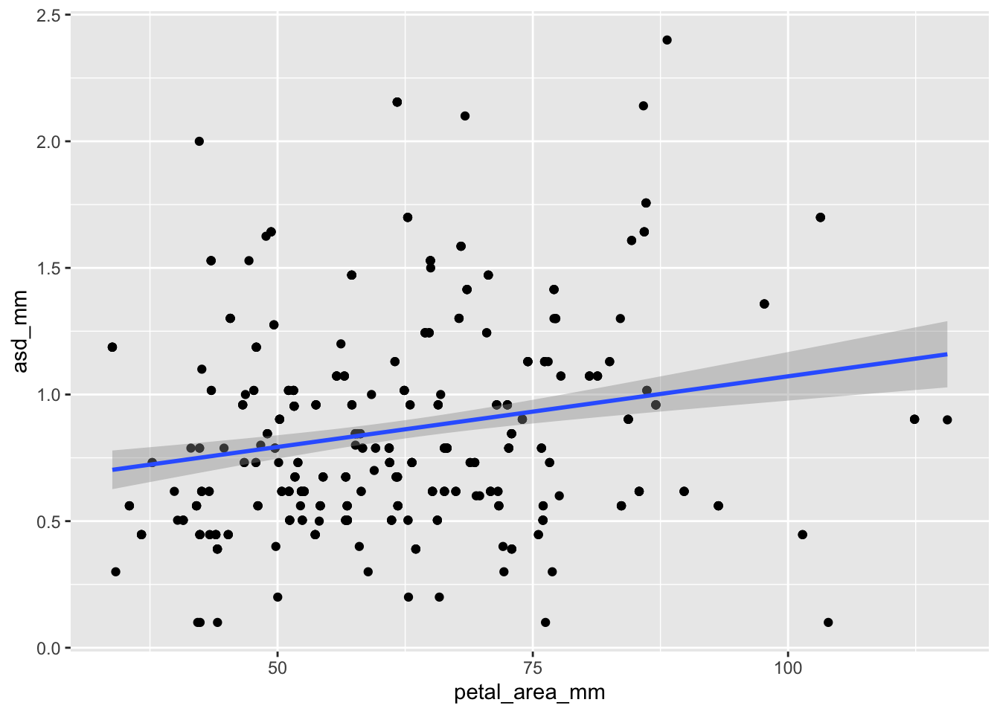
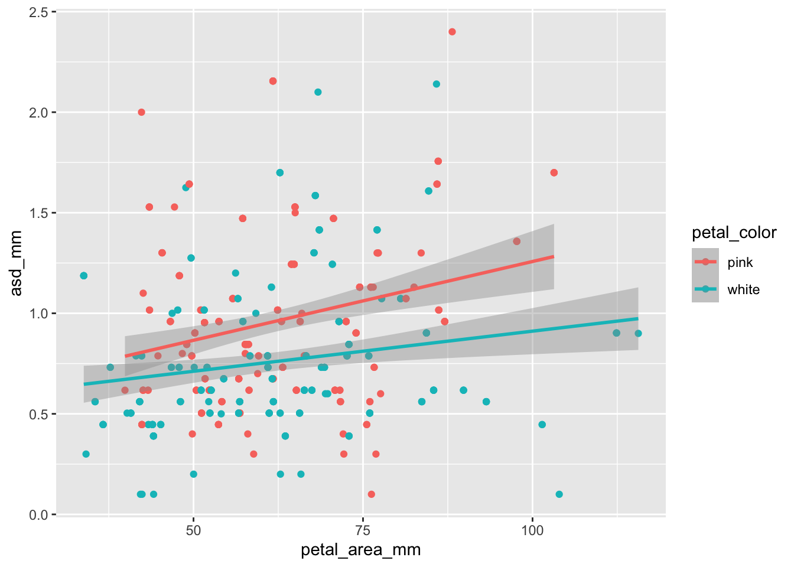
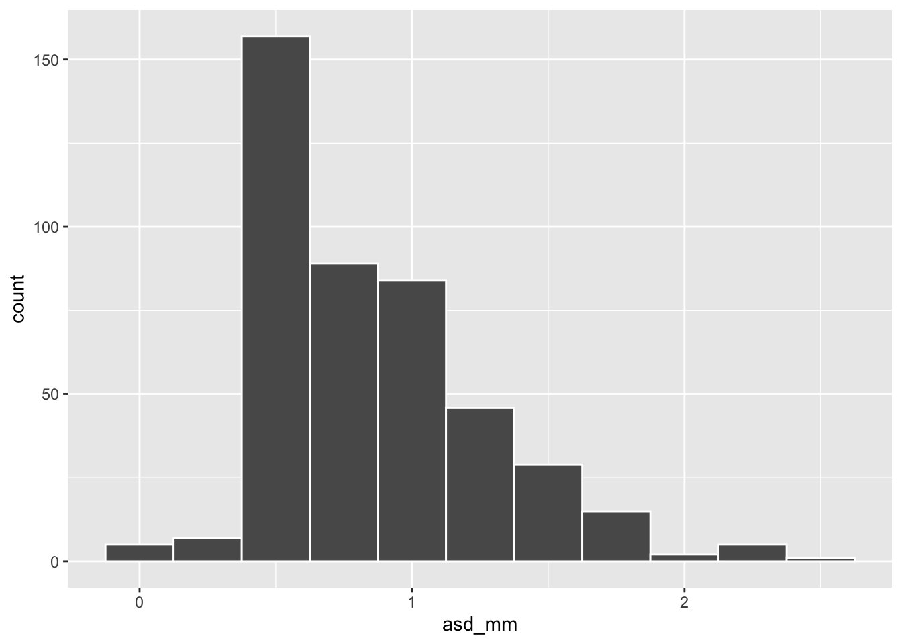
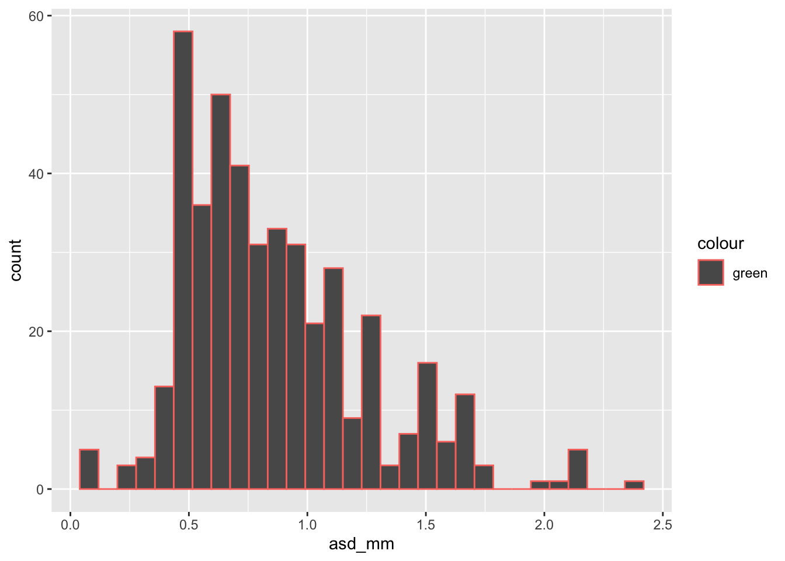

ggplot(ril_data, aes(x = petal_area_mm ,
y = asd_mm))+
geom_point()
Links to: Summary, Chatbot Tutor, Practice Questions, Glossary, R functions and R packages, and Additional resources + BONUS CONTENT: ggplotly.

Effective data visualization begins with curiosity and clear biological questions. Before writing a single line of code, it’s worth thinking about what you want to learn from your data and how best to visualize that information. Once we have developed some starting ideas and sketches, we are ready to use ggplot2’s flexible framework to bring these ideas to life. Data visualization with ggplot2 is built around the idea that plots are constructed by layering components: you begin by mapping variables to aesthetic properties like position, color, or size, and then choose how to display those mapped variables using geometric elements like histograms, barplots, or points. With this approach you can iteratively build visualizations that reflect your questions and highlight meaningful patterns.
Please interact with this custom chatbot (link here) I have made to help you with this chapter. I suggest interacting with at least ten back-and-forths to ramp up and then stopping when you feel like you got what you needed from it.
Try the questions below. The R environment below will allow you to work without changing tabs.
ggplot(ril_data, aes(x = petal_area_mm ,
y = asd_mm))+
geom_point()
.
ggplot(ril_data, aes(x = petal_area_mm , y = asd_mm))+
geom_point()+
geom_smooth(method = "lm")`geom_smooth()` using formula = 'y ~ x'
.
The slopes may be a bit different, but its more obvious that the red line is higher than the turquoise.
ggplot(ril_data, aes(x = petal_area_mm ,
y = asd_mm,
color = petal_color))+
geom_point()+
geom_smooth(method = "lm")`geom_smooth()` using formula = 'y ~ x'
.
asd_mm with a binwidth of 0.25. What is the most common anther stigma distance (asd_mm) with this binning?
ggplot(ril_data, aes(x = asd_mm))+
geom_histogram(binwidth = .25, color = "white")
.
ggplot(ril_data, aes(x = asd_mm, color = "green"))+
geom_histogram()As you can see the bar’s color is the standard dark grey. The lines around the bars are redish. This is because we mapped the variable “green” onto color. Instead keep it out of an aes() call. Also be sure to note the difference between color and fill arguments.
ggplot(ril_data, aes(x = asd_mm, color = "green"))+
geom_histogram()`stat_bin()` using `bins = 30`. Pick better value with `binwidth`.
#A
ggplot(ril_data, aes(x = asd_mm, fill = "green"))+
geom_histogram()
#B
ggplot(ril_data, aes(x = asd_mm, ))+
geom_histogram(color = "green")
#C
ggplot(ril_data, aes(x = asd_mm, ))+
geom_histogram(fill = "green")aes()): Defines how variables map onto plot elements (e.g., x/y position, color, size).geom_*()): Defines how data is represented (e.g., geom_point() for scatterplots, geom_bar() for bar plots).facet_wrap() and facet_grid()): Divides plots into multiple panels based on categorical variables.alpha, geom_jitter(), or geom_violin().ggplot() (ggplot2): The base function to create a ggplot.aes() (ggplot2): Defines how data is mapped to visual elements.geom_point() (ggplot2): Creates scatterplots.geom_jitter() (ggplot2): Jitters points to reduce overplotting.geom_bar() (ggplot2): Creates bar plots from raw data.geom_col() (ggplot2): Creates bar plots from summarized data.facet_wrap() (ggplot2): Creates multiple panels for categorical variables.facet_grid() (ggplot2): Creates a grid layout for multiple faceting variables.scale_x_continuous() (ggplot2): Modifies x-axis scales (e.g., log transformation).ggplot2: The core package for data visualization in the tidyverse.R Recipes:
Other web resources:
Chapter 3: Data visualization: From R for data science (Grolemund & Wickham (2018)).
Interactive web-based data visualization with R, plotly, and shiny
Videos:
Often data have strange outliers, or patterns you think you see but aren’t sure about, or simply interesting data points. When I run into these issues during exploratory data analysis I often want to know more about individual data points. To do so, I make interactive graphs with the ggplotly() function in the plotly package.
The example below shows how to do this. Note that you can make up random aesthetics that you never use and they show up when you hover over points – this helps with understanding outliers. You can also zoom in!
library(plotly)
big_plot <- ril_data |>
filter(!is.na(petal_color))|>
ggplot(aes(x = petal_area_mm,
y = prop_hybrid,
ril = ril,
mean_visits = mean_visits))+
geom_point(size = 3, alpha = .4)+
facet_grid(petal_color ~ location, labeller = "label_both")+
geom_smooth(method = "lm", se = FALSE)
ggplotly(big_plot)